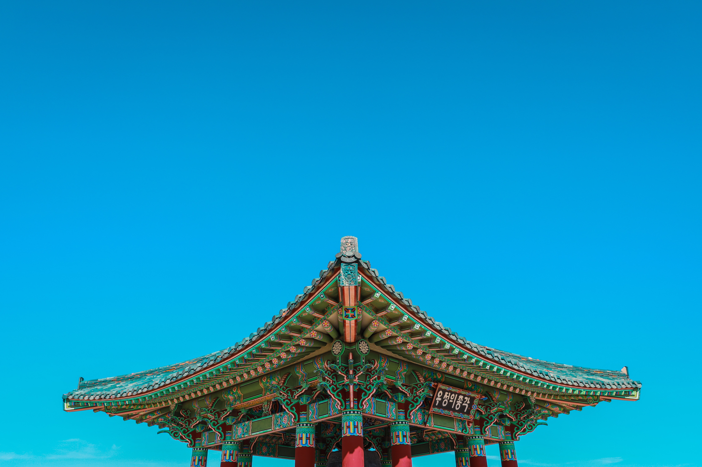
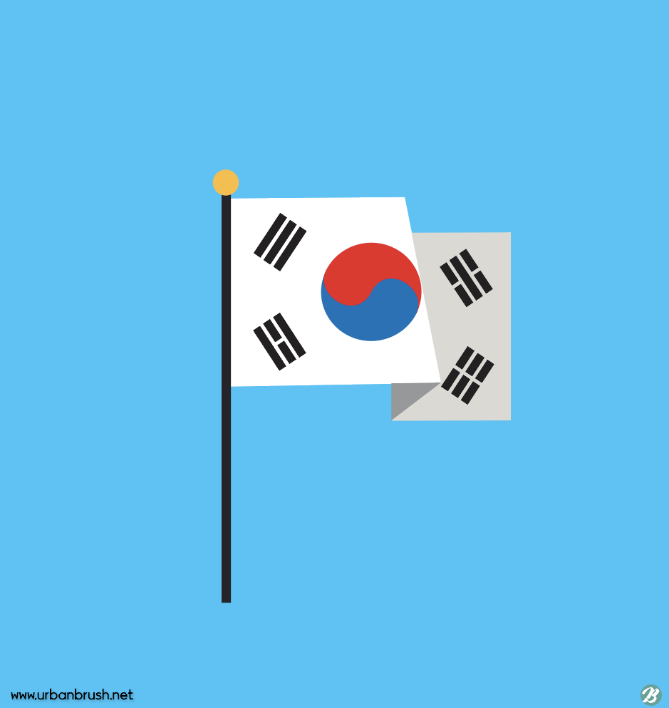

- introduction
- korea
- photos
South Korea is a country in Eastern Asia occupying the southern half of the Korean Peninsula. It borders the Sea of Japan, the Yellow Sea, and North Korea. South Korea's terrain is mostly mountainous. The government system is a republic; the chief of state is the president, and the head of government is the prime minister. South Korea has a mixed economic system which includes a variety of private freedom, combined with centralized economic planning and government regulation. South Korea is a member of the Asia-Pacific Economic Cooperation (APEC) and the Asia-Pacific Trade Agreement (APTA).

